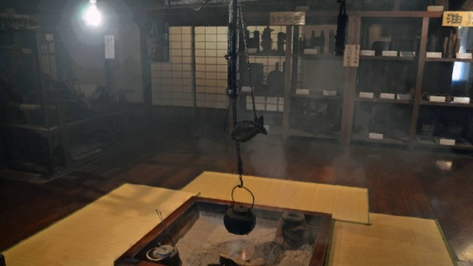
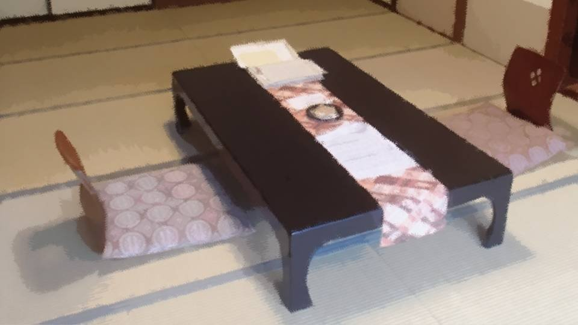
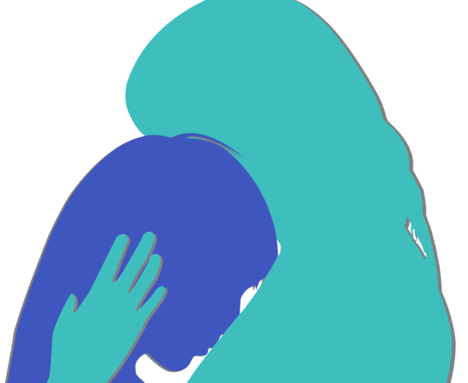

A Presence
"Hello? Chigaya-chan?"
"Mm... Auntie... Mm..."
"What is it? Something you forgot to tell me?"
"Mm... Sorry to bother you when you're busy. Could we meet and talk one more time...?"
"............ Hang on a second. I'll call you right back."
"Mm... Auntie... Mm..."
"What is it? Something you forgot to tell me?"
"Mm... Sorry to bother you when you're busy. Could we meet and talk one more time...?"
"............ Hang on a second. I'll call you right back."

There was no turning back now.
I decided to trust Auntie.
I decided to trust Auntie.
Dad coming under suspicion was more than I could stand, so I killed Mrs. Shirozaki.
From there it rolled further and further in a bad direction, and now it was dragging in people from outside the Arata settlement.
If I kept quiet any longer, there was no way things would get better.
From there it rolled further and further in a bad direction, and now it was dragging in people from outside the Arata settlement.
If I kept quiet any longer, there was no way things would get better.

"Mm... Hello!?"
"Chigaya-chan, I've cleared my schedule. Where would be good to meet? Somewhere out of sight?"
"Mm... No, it's not like we'll be talking loudly..."
"Then... I have to stop by just one more client. Can you come to Ginza at 6 p.m.? The place is―"
"Chigaya-chan, I've cleared my schedule. Where would be good to meet? Somewhere out of sight?"
"Mm... No, it's not like we'll be talking loudly..."
"Then... I have to stop by just one more client. Can you come to Ginza at 6 p.m.? The place is―"
Auntie told me to come at 6 p.m. to a place with a name I'd never heard of.
I had a feeling Ginza was all expensive places, though...
I couldn't very well go without makeup.
I had a feeling Ginza was all expensive places, though...
I couldn't very well go without makeup.
This time I warmed myself up properly in the tub, and put on a little makeup too.
My clothes, too, as crisp as I could manage.
I don't wear makeup for college, drinking parties, or my part-time job, so I wasn't quite used to it.
My clothes, too, as crisp as I could manage.
I don't wear makeup for college, drinking parties, or my part-time job, so I wasn't quite used to it.
In the end, I left home at the same time I always do for drinking parties, and got on the train.
But today the nerves were a different kind from usual.
Not looking for a wonderful encounter, but looking to Auntie for help.
I would confess to Auntie what I'd seen and what I'd done... and stop the curse-killings that had taken on a life of their own.
But today the nerves were a different kind from usual.
Not looking for a wonderful encounter, but looking to Auntie for help.
I would confess to Auntie what I'd seen and what I'd done... and stop the curse-killings that had taken on a life of their own.
Following the map on my phone, where I ended up was...

Another fancy-looking ryotei.
Once again Auntie would probably be treating me, but even lunch had been in the tens of thousands.
Once I was earning money, I'd have to pay her back properly...
Or so I thought, but that probably isn't an option.
I've killed five people. There's no way I can go back to my old life.
Once again Auntie would probably be treating me, but even lunch had been in the tens of thousands.
Once I was earning money, I'd have to pay her back properly...
Or so I thought, but that probably isn't an option.
I've killed five people. There's no way I can go back to my old life.
But even my decision to confess to Auntie is because I think it's for the best.
So I'm sure I won't regret it.
Leaving things as they are is what would lead to regret.
So I'm sure I won't regret it.
Leaving things as they are is what would lead to regret.

When I went inside, a sunken hearth, old but polished to a shine, was waiting for me.
On the shelves sat dishes and iron kettles with eye-popping price tags.
They seemed to sell all sorts of things as souvenirs.
Clearly a different world, one that had nothing to do with me.
I even forgot to close the door, and just stood there.
On the shelves sat dishes and iron kettles with eye-popping price tags.
They seemed to sell all sorts of things as souvenirs.
Clearly a different world, one that had nothing to do with me.
I even forgot to close the door, and just stood there.
"Welcome. Thank you for coming."
A woman who seemed to be the attendant knelt respectfully and bowed with her fingertips to the floor.
Caught up in it, I bowed too.
"Mm............"
I didn't know what to say, and a moment of silence passed.
A woman who seemed to be the attendant knelt respectfully and bowed with her fingertips to the floor.
Caught up in it, I bowed too.
"Mm............"
I didn't know what to say, and a moment of silence passed.
"Do you know the name on the reservation?"
Maybe she'd picked up on how stiff I was, and on my expression, because she quickly offered a question that was easy to answer.
"Mm... It's Niimura. I think the reservation was probably made at short notice..."
"Ah, Niimura-sama. We have been expecting you. Please, this way."
It seemed I'd somehow been permitted to take off my shoes and step inside.
Maybe she'd picked up on how stiff I was, and on my expression, because she quickly offered a question that was easy to answer.
"Mm... It's Niimura. I think the reservation was probably made at short notice..."
"Ah, Niimura-sama. We have been expecting you. Please, this way."
It seemed I'd somehow been permitted to take off my shoes and step inside.

The room I was shown to had two legless floor chairs and a fairly large table.
There was an alcove, too, and the sliding doors between the room and the hallway were thick.
Auntie must have arranged a place where our voices wouldn't carry.
Since she'd gone this far for me, I had to talk to her with all the sincerity I had.
There was an alcove, too, and the sliding doors between the room and the hallway were thick.
Auntie must have arranged a place where our voices wouldn't carry.
Since she'd gone this far for me, I had to talk to her with all the sincerity I had.
"What would you like to order? Or would you prefer to wait until your companion arrives?"
"Mm... Yes, I'll wait."
"Certainly. I'll bring you some tea."
"Mm... Yes, I'll wait."
"Certainly. I'll bring you some tea."
Once the attendant left, the room went almost completely silent.
There was the presence of people in the other rooms.
But even when I strained my ears, I could hardly make out any voices.
There was the presence of people in the other rooms.
But even when I strained my ears, I could hardly make out any voices.
"Phew..."
I let out a big breath and steadied myself.
Then these stiff clothes started to feel cramped.
The smell of the makeup I wasn't used to bothered my nose a little.
I wanted to scrub my face with the hand towel right then and there.
I let out a big breath and steadied myself.
Then these stiff clothes started to feel cramped.
The smell of the makeup I wasn't used to bothered my nose a little.
I wanted to scrub my face with the hand towel right then and there.

"Chigaya-chan, sorry to keep you waiting."
Auntie came in with the attendant.
The attendant set the one tea she'd brought in front of me.
Auntie came in with the attendant.
The attendant set the one tea she'd brought in front of me.
"Thanks for showing me in!
Oh, this girl here is my niece!"
"My, Niimura-sama's niece. Thank you for coming today. Please, take your time."
The attendant left without even taking our order.
"My, Niimura-sama's niece. Thank you for coming today. Please, take your time."
The attendant left without even taking our order.
"Chigaya-chan, I've asked them to hold the food. Let's get the talking done first."
"............"
Auntie seemed to have already guessed what kind of talk I meant to have.
She must have thought it better for me to get everything out before we ate.
"............"
Auntie seemed to have already guessed what kind of talk I meant to have.
She must have thought it better for me to get everything out before we ate.
"Mm..."
But how should I bring it up?
I'd been ready for this, and yet I kept thinking up ways to put it that would defend myself, even a little.
I really am a coward.
But how should I bring it up?
I'd been ready for this, and yet I kept thinking up ways to put it that would defend myself, even a little.
I really am a coward.
"Excuse me."
The attendant brought one tea and two glasses of ice water.
And extra hand towels, and tissues.
It had turned into something like a counseling room.
The attendant brought one tea and two glasses of ice water.
And extra hand towels, and tissues.
It had turned into something like a counseling room.
"Chigaya-chan, if it's hard to talk about, shall I ask the questions?"
After the attendant left, to pry my closed mouth open, Auntie made a move as well.
"Mm... It's okay, I'll tell it myself."
Even so, I'd been like this for five whole minutes.
Still, Auntie showed no sign of irritation, and kept trying to make it even a little easier for me to talk.
After the attendant left, to pry my closed mouth open, Auntie made a move as well.
"Mm... It's okay, I'll tell it myself."
Even so, I'd been like this for five whole minutes.
Still, Auntie showed no sign of irritation, and kept trying to make it even a little easier for me to talk.
"Mm... Auntie...
I..."
Unable to look into the eyes of Auntie, whose smile never wavered, I dropped my gaze.
Unable to look into the eyes of Auntie, whose smile never wavered, I dropped my gaze.
"Mm...
I did it.
I..."
I meant to accept whatever she said, without complaint.
Or would she just leave without saying anything?
With my head down, I waited for Auntie's reaction.
But sooner than I'd expected, Auntie spoke.
I meant to accept whatever she said, without complaint.
Or would she just leave without saying anything?
With my head down, I waited for Auntie's reaction.
But sooner than I'd expected, Auntie spoke.
"I see...
It's been hard... all this time..."
From across the table, Auntie came and sat beside me.
Then, on my hand where it rested on the tatami, Auntie laid her own.
Then, on my hand where it rested on the tatami, Auntie laid her own.
"I'm glad you told me.
What you just said took a lot of courage, I think.
Thank you for telling me."
I hadn't said anything that deserved thanks or praise.
I'd only said something to be cursed and blamed for.
Even so, Auntie spared no words in caring for me.
I hadn't said anything that deserved thanks or praise.
I'd only said something to be cursed and blamed for.
Even so, Auntie spared no words in caring for me.

I threw myself against Auntie's chest and held on.
I'd reached my limit.
Ever since I was 10, I'd carried it all by myself.
Mom's death and beheading, the fear of losing my family, and murder.
I'd reached my limit.
Ever since I was 10, I'd carried it all by myself.
Mom's death and beheading, the fear of losing my family, and murder.
Everything I'd hidden until now came gushing out of my whole body like a burst dam.
What it really was, gushing out of me, was― nothing but emptiness, sadness, and guilt.
What it really was, gushing out of me, was― nothing but emptiness, sadness, and guilt.
Could my sobs be heard in the other rooms?
Sobs that even thick walls and sliding doors couldn't fully hold back.
Even so, I couldn't stop.
Dark feelings sealed away for 10 years, once they burst out, don't stop until every last bit has come out.
Sobs that even thick walls and sliding doors couldn't fully hold back.
Even so, I couldn't stop.
Dark feelings sealed away for 10 years, once they burst out, don't stop until every last bit has come out.
All of it, Auntie was taking head-on.
Auntie stroked my head.
Just like Mom.
Auntie stroked my head.
Just like Mom.
Auntie and Haruka aren't related by blood. I know that.
Even so, Auntie has doted on Haruka and raised her with love.
Now I was being given a small share of that love too.
Even so, Auntie has doted on Haruka and raised her with love.
Now I was being given a small share of that love too.
Gradually Auntie's love began to mend the burst dam, the muddy torrent was held back, and my sobbing died down.
How long had I cried?
Maybe only a minute. Maybe an hour.
Auntie never once shifted her position, and took it all head-on.
How long had I cried?
Maybe only a minute. Maybe an hour.
Auntie never once shifted her position, and took it all head-on.
"Feeling better?"
"Mm... Sorry, Auntie... Thank you."
"Mm... Sorry, Auntie... Thank you."
"Chigaya-chan, I'll be honest with you too.
10 years ago, I once seriously tried to kill some classmates who were bullying Haruka.
So I understand very well how you feel, Chigaya-chan.
Of course murder is wrong, but I could never blame you without hearing the circumstances."
Auntie had a past like that too, then.
But why did Auntie hold back?
Auntie had a past like that too, then.
But why did Auntie hold back?
"Haruka's real little sister, Natsumi-chan. That girl stopped me.
Natsumi-chan is usually just an ordinary, slightly timid girl, but the tighter the spot, the stronger she gets.
She never loses sight of herself, and she can choose, without hesitating, the future where everyone ends up happiest.
Haruka and I were saved by Natsumi-chan."
I see... so that's why she's bringing Natsumi-chan to Arata...
Natsumi-chan is what keeps everyone going.
That's why she's needed...
That's why she felt like Mom.
Natsumi-chan is what keeps everyone going.
That's why she's needed...
That's why she felt like Mom.
"And, you see, Natsumi-chan...
has the same power Sakura-san had."
In that instant, my heart whirled violently, and a feeling completely different from the one a second before raged through me.
Natsumi-chan had precognition. The moment I was sure of it, that feeling raged through me.
It wasn't sadness, and it wasn't emptiness.
A strong sense that something was off, and doubt, raged in me, and something clicked into place.
Natsumi-chan had precognition. The moment I was sure of it, that feeling raged through me.
It wasn't sadness, and it wasn't emptiness.
A strong sense that something was off, and doubt, raged in me, and something clicked into place.
Auntie's chest―I lifted my face from it and downed a glass of water in one gulp.
This was it. From here, my real talk with Auntie would begin.
And I'd have to tell her about this strange constitution of mine, too.
All the scattered pieces were about to connect into one.
This was it. From here, my real talk with Auntie would begin.
And I'd have to tell her about this strange constitution of mine, too.
All the scattered pieces were about to connect into one.
 video: 111.wmv
video: 111.wmvThat's right. I sensed a strange presence.
The presence of someone who isn't here.
Some great will at work.
Someone is pulling the strings, and we are nothing but their puppets.
For the first time, I sensed the presence of that puppeteer.
The presence of someone who isn't here.
Some great will at work.
Someone is pulling the strings, and we are nothing but their puppets.
For the first time, I sensed the presence of that puppeteer.
Read ✓ Next in this arc →